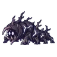
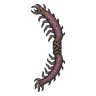

ป่ารากดำ
ดูบนแผนที่และวิธีไป วางแผนฟาร์ม
ชั้นล่างในป่ากองไฟ · Lv 86–96
ชั้นล่าง / ดันเจี้ยน
มอนในแมพ (9)
| มอน | Lv | ในแมพ | ธาตุ | โซน |
|---|---|---|---|---|
 ตัวคืบรากดำ | 88–96 | ≈40 | มืด | ซุ้มรากดำ |
| 86–94 | ≈39 | วิญญาณ | ซุ้มรากดำ | |
| 86–92 | ≈17 | มืด | ||
| 88–96 | ≈11 | ไม่มีธาตุ | ||
| 88–96 | ≈11 | มืด | ||
| ตัวคืบรากดำ · ร่างแดงเลือด | 88–96 | ≈2 | มืด | |
| 98–98 | 1 | วิญญาณ | ||
| 99–99 | 1 | มืด | ||
| 99–99 | 1 | มืด |
≈ จำนวนที่อยู่ในแมพพร้อมกันโดยเฉลี่ย คิดจากไฟล์เกม (จุดเกิดของแมพ × 4 แบ่งตามสัดส่วนของแต่ละตัว) ตายแล้วเกิดใหม่ที่เดิมใน 22 วินาที · ตอนเล่นออนไลน์เซิร์ฟเวอร์เป็นคนเกิดมอน อาจไม่ตรง
อุปกรณ์ที่ดรอปในแมพนี้
| ของ | โอกาสสูงสุด |
|---|---|
| 0.5% | |
| 0.25% | |
| 0.25% | |
| 0.25% | |
| ชุดนักเดินเรือดาว | 0.15% |
| ชุดผู้ฝึกเหยี่ยว | 0.15% |
| ชุดแมวผี | 0.15% |
| ชุดจารึกรูน | 0.15% |
 ธนูตัวคืบรากดำ | 0.12% |
| 0.12% | |
| 0.12% | |
| 0.12% | |
| 0.12% | |
| 0.12% | |
| 0.12% |